<!DOCTYPE html>
<html>
<head><meta name="generator" content="Hexo 3.8.0">
  <meta charset="utf-8">
  
  <title>移动端主导航的设计模式 | guowj</title>
  <meta name="viewport" content="width=device-width, initial-scale=1, maximum-scale=1">
  
  <meta name="keywords" content="产品交互设计移动端主导航设计">
  
  
  
  
  <meta name="description" content="&amp;nbsp;&amp;nbsp;&amp;nbsp;&amp;nbsp;&amp;nbsp;&amp;nbsp;任何产品的功能以及内容都需要以某种导航框架组织起来，使产品结构清晰，目标明确。在用户体验要素中，框架层里面有个很重要的概念就是导航设计，作者对导航设计的定义是：元素的组合，允许用户在信息架构中穿行。导航通常就是引导用户使用产品、完成目标的工具。这篇文章主要记录下在看了多个大牛分享主导航设计后，自己的总结体会。主导航时呈现应用">
<meta name="keywords" content="产品,交互设计,移动端,主导航设计">
<meta property="og:type" content="article">
<meta property="og:title" content="移动端主导航的设计模式">
<meta property="og:url" content="https://gwjacqueline.github.io/移动端主导航的设计模式/index.html">
<meta property="og:site_name" content="guowj">
<meta property="og:description" content="&amp;nbsp;&amp;nbsp;&amp;nbsp;&amp;nbsp;&amp;nbsp;&amp;nbsp;任何产品的功能以及内容都需要以某种导航框架组织起来，使产品结构清晰，目标明确。在用户体验要素中，框架层里面有个很重要的概念就是导航设计，作者对导航设计的定义是：元素的组合，允许用户在信息架构中穿行。导航通常就是引导用户使用产品、完成目标的工具。这篇文章主要记录下在看了多个大牛分享主导航设计后，自己的总结体会。主导航时呈现应用">
<meta property="og:locale" content="zh-CN">
<meta property="og:image" content="https://gwjacqueline.github.io/images/pm/dbtdh.png">
<meta property="og:image" content="https://gwjacqueline.github.io/images/pm/dsdh.png">
<meta property="og:image" content="https://gwjacqueline.github.io/images/pm/fdxxk.png">
<meta property="og:image" content="https://gwjacqueline.github.io/images/pm/gddh.png">
<meta property="og:image" content="https://gwjacqueline.github.io/images/pm/gdxxk.png">
<meta property="og:image" content="https://gwjacqueline.github.io/images/pm/udtabdh.png">
<meta property="og:image" content="https://gwjacqueline.github.io/images/pm/ctsdh.png">
<meta property="og:image" content="https://gwjacqueline.github.io/images/pm/ctsdh3.png">
<meta property="og:image" content="https://gwjacqueline.github.io/images/pm/xlcds.png">
<meta property="og:image" content="https://gwjacqueline.github.io/images/pm/xlcds2.png">
<meta property="og:image" content="https://gwjacqueline.github.io/images/pm/xfdh.png">
<meta property="og:updated_time" content="2019-07-26T07:59:28.807Z">
<meta name="twitter:card" content="summary">
<meta name="twitter:title" content="移动端主导航的设计模式">
<meta name="twitter:description" content="&amp;nbsp;&amp;nbsp;&amp;nbsp;&amp;nbsp;&amp;nbsp;&amp;nbsp;任何产品的功能以及内容都需要以某种导航框架组织起来，使产品结构清晰，目标明确。在用户体验要素中，框架层里面有个很重要的概念就是导航设计，作者对导航设计的定义是：元素的组合，允许用户在信息架构中穿行。导航通常就是引导用户使用产品、完成目标的工具。这篇文章主要记录下在看了多个大牛分享主导航设计后，自己的总结体会。主导航时呈现应用">
<meta name="twitter:image" content="https://gwjacqueline.github.io/images/pm/dbtdh.png">
  
    <link rel="alternate" href="/atom.xml" title="guowj" type="application/atom+xml">
  

  

  <link rel="icon" href="/css/images/mylogo.png">
  <link rel="apple-touch-icon" href="/css/images/mylogo.png">
  
    <link href="//fonts.googleapis.com/css?family=Source+Code+Pro" rel="stylesheet" type="text/css">
  
  <link href="https://fonts.googleapis.com/css?family=Open+Sans|Montserrat:700" rel="stylesheet" type="text/css">
  <link href="https://fonts.googleapis.com/css?family=Roboto:400,300,300italic,400italic" rel="stylesheet" type="text/css">
  <link href="//netdna.bootstrapcdn.com/font-awesome/4.0.3/css/font-awesome.css" rel="stylesheet">
  <style type="text/css">
    @font-face{font-family:futura-pt; src:url("../css/fonts/FuturaPTBold.otf") format("woff");font-weight:500;font-style:normal;}
    @font-face{font-family:futura-pt-light; src:url("../css/fonts/FuturaPTBook.otf") format("woff");font-weight:lighter;font-style:normal;}
    @font-face{font-family:futura-pt-italic; src:url("../css/fonts/FuturaPTBookOblique.otf") format("woff");font-weight:400;font-style:italic;}
}

  </style>
  <link rel="stylesheet" href="/css/style.css">

  <script src="/js/jquery-3.1.1.min.js"></script>
  <script src="/js/bootstrap.js"></script>

  <!-- Bootstrap core CSS -->
  <link rel="stylesheet" href="/css/bootstrap.css">

  
    <link rel="stylesheet" href="/css/dialog.css">
  

  

  
    <link rel="stylesheet" href="/css/header-post.css">
  

  
  
  
    <link rel="stylesheet" href="/css/vdonate.css">
  

</head>
</html>


  <body data-spy="scroll" data-target="#toc" data-offset="50">


  
  <div id="container">
    <div id="wrap">
      
        <header>

    <div id="allheader" class="navbar navbar-default navbar-static-top" role="navigation">
        <div class="navbar-inner">
          
          <div class="container"> 
            <button type="button" class="navbar-toggle" data-toggle="collapse" data-target=".navbar-collapse">
              <span class="sr-only">Toggle navigation</span>
              <span class="icon-bar"></span>
              <span class="icon-bar"></span>
              <span class="icon-bar"></span>
            </button>

            
              <a class="brand" style="
                 margin-top: 0px;" href="#" data-toggle="modal" data-target="#myModal">
                  
              </a>
            
            
            <div class="navbar-collapse collapse">
              <ul class="hnav navbar-nav">
                
                  <li> <a class="main-nav-link" href="/">首页</a> </li>
                
                  <li> <a class="main-nav-link" href="/archives">归档</a> </li>
                
                  <li> <a class="main-nav-link" href="/categories">分类</a> </li>
                
                  <li> <a class="main-nav-link" href="/tags">标签</a> </li>
                
                  <li><div id="search-form-wrap">

    <form class="search-form">
        <input type="text" class="ins-search-input search-form-input" placeholder>
        <button type="submit" class="search-form-submit"></button>
    </form>
    <div class="ins-search">
    <div class="ins-search-mask"></div>
    <div class="ins-search-container">
        <div class="ins-input-wrapper">
            <input type="text" class="ins-search-input" placeholder="请输入关键词...">
            <span class="ins-close ins-selectable"><i class="fa fa-times-circle"></i></span>
        </div>
        <div class="ins-section-wrapper">
            <div class="ins-section-container"></div>
        </div>
    </div>
</div>
<script>
(function (window) {
    var INSIGHT_CONFIG = {
        TRANSLATION: {
            POSTS: '文章',
            PAGES: '页面',
            CATEGORIES: '分类',
            TAGS: '标签',
            UNTITLED: '(无标题)',
        },
        ROOT_URL: '/',
        CONTENT_URL: '/content.json',
    };
    window.INSIGHT_CONFIG = INSIGHT_CONFIG;
})(window);
</script>
<script src="/js/insight.js"></script>

</div></li>
            </ul></div>
          </div>
                
      </div>
    </div>

</header>


      
            
      <div id="content" class="outer">
        
          <section id="main" style="float:none;"><article id="post-移动端主导航的设计模式" style="width: 75%; float:left;" class="article article-type-post" itemscope itemprop="blogPost">
  <div id="articleInner" class="article-inner">
    
    
      <header class="article-header">
        
  
    <h1 class="thumb" itemprop="name">
      移动端主导航的设计模式
    </h1>
  

      </header>
    
    <div class="article-meta">
      
	<a href="/移动端主导航的设计模式/" class="article-date">
	  <time datetime="2019-07-20T12:49:46.000Z" itemprop="datePublished">2019-07-20</time>
	</a>

      
    <a class="article-category-link" href="/categories/产品/">产品</a>

      
	<a class="article-views">
	<span id="busuanzi_container_page_pv">
		阅读量<span id="busuanzi_value_page_pv"></span>
	</span>
	</a>

      

    </div>
    <div class="article-entry" itemprop="articleBody">
      
        <blockquote>
<p>&nbsp;&nbsp;&nbsp;&nbsp;&nbsp;&nbsp;任何产品的功能以及内容都需要以某种导航框架组织起来，使产品结构清晰，目标明确。在用户体验要素中，框架层里面有个很重要的概念就是导航设计，作者对导航设计的定义是：元素的组合，允许用户在信息架构中穿行。导航通常就是引导用户使用产品、完成目标的工具。这篇文章主要记录下在看了多个大牛分享主导航设计后，自己的总结体会。主导航时呈现应用的主要功能架构及布局的导航方式，是应用的顶层架构。</p>
</blockquote>
<a id="more"></a>
<h2 id="标签式导航-tab-式导航"><a href="#标签式导航-tab-式导航" class="headerlink" title="标签式导航(tab 式导航)"></a>标签式导航(tab 式导航)</h2><p>&nbsp;&nbsp;&nbsp;&nbsp;&nbsp;&nbsp;<strong>tab 式导航</strong>是移动应用中最普遍、最常用的导航模式。适合在相关的几类信息中间频繁的调转。这类信息优先级较高、用户使用频繁，彼此之间相互独立，通过标签式导航的引导，用户可以迅速的实现页面之间的切换且不会迷失方向，简单而高效。需要注意的是标签式导航根据逻辑和重要性控制在 5 个以内，多余 5 个用户难以记忆而且容易迷失。总而言之，这个 tab 适合的场景主要有两个方面：<strong>1.各个 tab 功能重要程度都高的时候；2.用户需要频繁切换的时候</strong>。<br>&nbsp;&nbsp;&nbsp;&nbsp;&nbsp;&nbsp;标签式导航主要细分为底部 tab 式导航、顶部 tab 式导航、底部 tab 的扩展导航这三种。</p>
<h3 id="底部-tab-式导航"><a href="#底部-tab-式导航" class="headerlink" title="底部 tab 式导航"></a>底部 tab 式导航</h3><p>&nbsp;&nbsp;&nbsp;&nbsp;&nbsp;&nbsp;底部 tab 式导航是最基本的导航，像微信、淘宝、QQ 等全部都是底部 tab 式导航。这是符合拇指热区操作的一种导航模式。大部分是以文字+icon 的形式呈现，使用户减少记忆负担。</p>
<div align="center"><br>  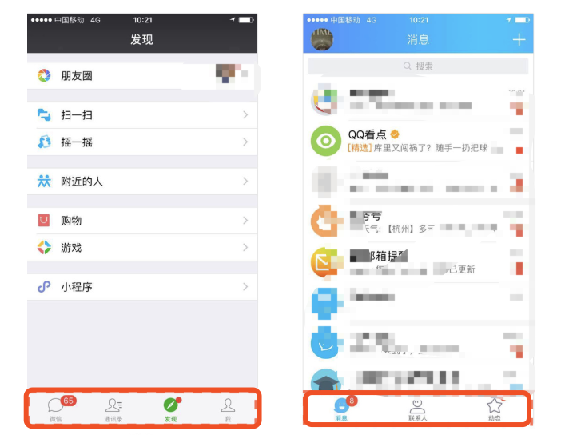<br></div>

<p><strong>优点：</strong></p>
<ul>
<li>切换方便快捷</li>
<li>可见性好</li>
</ul>
<p><strong>缺点：</strong></p>
<ul>
<li>可扩展性不高，一般 3-5 个 tab</li>
<li>占用一定空间，沉浸式体验不足</li>
</ul>
<p><strong>适用场景</strong></p>
<ul>
<li>各个功能重要程度都高的时候</li>
<li>用户需要频繁切换的时候</li>
</ul>
<h3 id="底部-tab-的扩展导航-舵式导航"><a href="#底部-tab-的扩展导航-舵式导航" class="headerlink" title="底部 tab 的扩展导航(舵式导航)"></a>底部 tab 的扩展导航(舵式导航)</h3><p>&nbsp;&nbsp;&nbsp;&nbsp;&nbsp;&nbsp;舵式导航是底部 tab 导航的扩展形式，有些情况下，简单的底部 tab 导航难以满足更多的操作功能，因此在标签栏的中间加入了功能按钮（多为发布型的功能按钮），来作为应用最核心的操作功能入口。是 app 里面使用最频繁的一个功能，一般都会重点突出。并且，该标签中很多时候会有二级导航，二级导航里可扩展性就比较强。</p>
<div align="center"><br>  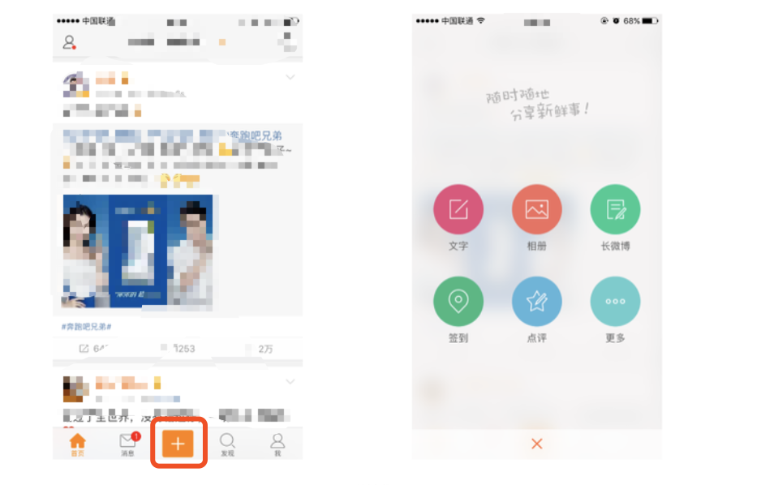<br></div>

<p><strong>优点：</strong></p>
<ul>
<li>突出重要且频繁使用的操作入口，较大限度引导用户进行操作</li>
<li>二级导航可扩展性强</li>
</ul>
<p><strong>缺点：</strong></p>
<ul>
<li>中间按钮旁边的按钮点击率会降低</li>
<li>同底部 tab 式导航</li>
</ul>
<p><strong>适用场景</strong></p>
<ul>
<li>如果你的 app 几个重要的功能，并且它们切换频繁，其中一个作为 app 的核心功能或者是操作。这个时候可以选择舵式导航</li>
</ul>
<h3 id="顶部-tab-式导航"><a href="#顶部-tab-式导航" class="headerlink" title="顶部 tab 式导航"></a>顶部 tab 式导航</h3><p>&nbsp;&nbsp;&nbsp;&nbsp;&nbsp;&nbsp;顶部标签导航顾名思义就是 tabbar 位于顶部，最早知道它是在 Material Design 里面，Android 的物理按键已经放在底部了，为了不产生堆叠，所以将标签导航置于顶部不会显得突兀。这种导航的最大优点在于在能够使用户清晰的看到 APP 的分类。它很少用作一级导航，一般是二级导航比较多，且几乎都是纯文字的形式。顶部 tab 式导航大致分为<em>分段选项卡、固定选项卡、滚动选项卡</em>四种。</p>
<h4 id="分段选项卡"><a href="#分段选项卡" class="headerlink" title="分段选项卡"></a>分段选项卡</h4><p>&nbsp;&nbsp;&nbsp;&nbsp;&nbsp;&nbsp;<strong>分段选项卡实现容器内不同视图或内容间的切换。</strong>分段选项卡是由两个或两个以上宽度相同的分段组成，正常情况下不超过 4 个，视觉上会有一个很明显的描边按钮。分段选项卡经常会作为二级导航，对主导航内容再次分类，可以在顶部导航栏的下方，也可以直接放在导航栏上。</p>
<div align="center"><br>  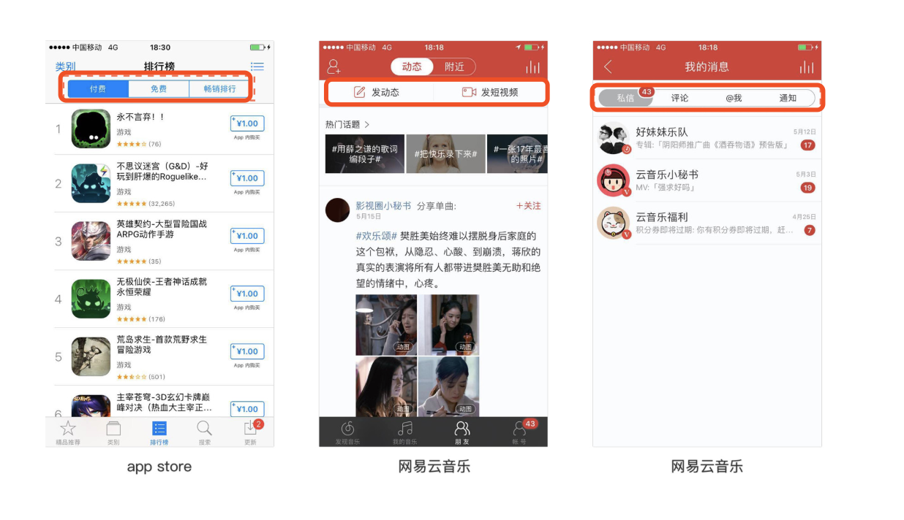<br></div>

<p><strong>优点：</strong></p>
<ul>
<li>分段选项卡可以承载重要性和频率处于同一级别的功能模块、信息或任务</li>
<li>让用户清楚地知道有多个可供选择的视图</li>
<li>支持用户在不同视图间切换</li>
</ul>
<p><strong>缺点：</strong></p>
<ul>
<li>选项卡个数有限，一般不超过 4 个。</li>
<li>只支持点击分段实现视图间的切换，不支持左右滑动的切换。</li>
</ul>
<p><strong>适用场景</strong></p>
<ul>
<li>对主导航内容再次分类，重要级相同且不超过 4 个。</li>
</ul>
<h4 id="固定选项卡"><a href="#固定选项卡" class="headerlink" title="固定选项卡"></a>固定选项卡</h4><p>&nbsp;&nbsp;&nbsp;&nbsp;&nbsp;&nbsp;固定选项卡固定在屏幕顶部，适用在应用的主要类别之间切换，并且支持左右滑动切换到不同视图。</p>
<div align="center"><br>  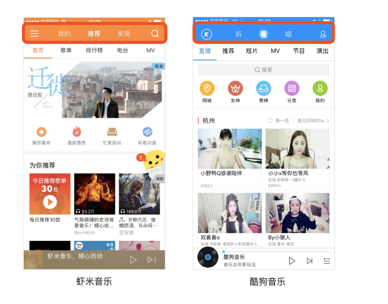<br></div>

<p><strong>优点：</strong></p>
<ul>
<li>固定选项卡可以承载重要性和频率处于同一级别的功能模块、信息或任务</li>
<li>让用户清楚地知道有多个可供选择的视图</li>
<li>支持用户在不同视图间切换，并且支持左右滑动切换，方便操作</li>
<li>显眼——位置处于页面顶部，基于用户由上至下的浏览习惯，固定选项卡处于页面“显眼处”；</li>
</ul>
<p><strong>缺点：</strong></p>
<ul>
<li>选项卡个数有限，一般不超过 4 个。</li>
<li>只支持点击分段实现视图间的切换，不支持左右滑动的切换。</li>
</ul>
<p><strong>适用场景</strong></p>
<ul>
<li>对主导航内容再次分类，重要级相同且不超过 4 个。</li>
</ul>
<h4 id="滚动选项卡"><a href="#滚动选项卡" class="headerlink" title="滚动选项卡"></a>滚动选项卡</h4><p>&nbsp;&nbsp;&nbsp;&nbsp;&nbsp;&nbsp;滚动选项卡与固定选项卡同属选项卡式，最大区别在于：一个模块中可以显示多个（超过 5 个）类别的视图，并且还可以进行扩展或移除（自定义如新闻类的频道、现在比较火的直播类的各类游戏），同样支持左右滑动切换到不同视图。</p>
<div align="center"><br>  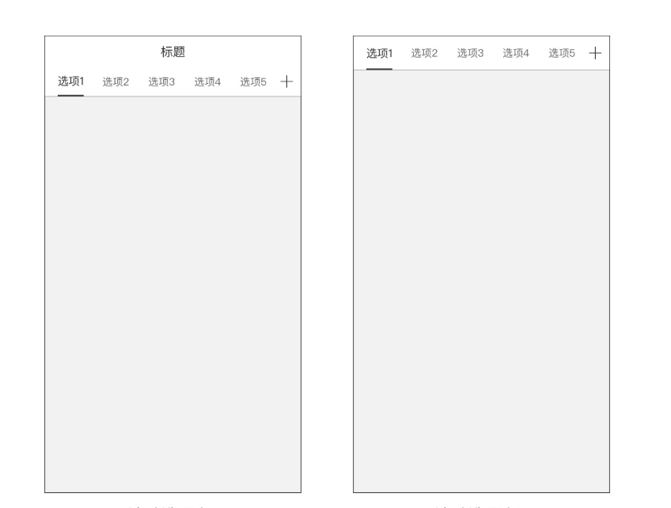<br></div>

<p><strong>优点：</strong></p>
<ul>
<li>没有选项卡个数的显示，并且还支持扩展或移除</li>
<li>可以承载重要性和频率处于同一级别的功能模块、信息或任务</li>
<li>支持用户在不同视图间切换，并且支持左右滑动切换，方便操作</li>
</ul>
<p><strong>缺点：</strong></p>
<ul>
<li>滚动选项卡越多，用户的选择压力越大，这也是滚动选项卡无法避免的劣势，所以当类别过多的时候，一般都默认显示一定数量，其他都放在二级页面，由用户自由添加。</li>
</ul>
<p><strong>适用场景</strong></p>
<ul>
<li>标签较多时</li>
<li>一般用作二级导航</li>
</ul>
<h3 id="底部、顶部组合-tab-导航"><a href="#底部、顶部组合-tab-导航" class="headerlink" title="底部、顶部组合 tab 导航"></a>底部、顶部组合 tab 导航</h3><p>&nbsp;&nbsp;&nbsp;&nbsp;&nbsp;&nbsp;有些应用存在上下两层标签，这是由于应用的信息量巨大且信息的布局有多个层级导致的。这种界面布局较为复杂，特别注重逻辑清晰。</p>
<div align="center"><br>  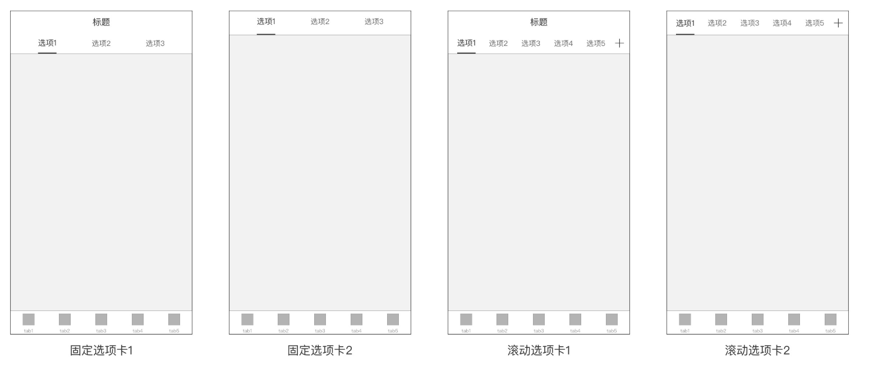<br></div>

<p><strong>优点：</strong></p>
<ul>
<li>底部、顶部组合 tab 导航解决了诸如新闻资讯类、直播类等信息量巨大且有多个层级的应用的布局问题。这种组合导航方式的运用还是比较多的</li>
</ul>
<p><strong>缺点：</strong></p>
<ul>
<li>双层 tab 占用了更多的页面空间，具体内容的展示空间进一步被压缩，获取信息的数量相应减少。</li>
<li>页面标签过多，信息量太大，用户容易选择困难，且造成使用混乱。所以，这种组合导航必须注重逻辑梳理清晰，界面排布合理，尽量减少给用户带来负面影响。</li>
</ul>
<p><strong>适用场景</strong></p>
<ul>
<li>信息量巨大且有多个层级的应用</li>
</ul>
<h2 id="抽屉式导航"><a href="#抽屉式导航" class="headerlink" title="抽屉式导航"></a>抽屉式导航</h2><p>&nbsp;&nbsp;&nbsp;&nbsp;&nbsp;&nbsp;抽屉式导航又称侧边（抽屉） 式导航，是一种瞬时的导航方式，即只有在我们需要的时候才会显示出来（通过点击调出），在我们做出选择后，再次消失。</p>
<div align="center"><br>  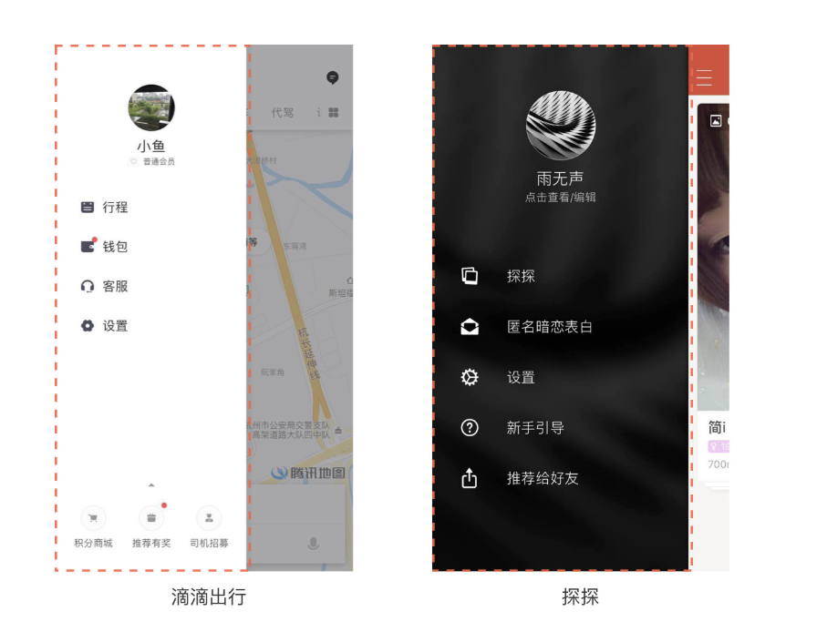<br></div>

<p><strong>优点：</strong></p>
<ul>
<li>节省页面展示空间。</li>
<li>让用户注意力聚焦到当前页面</li>
<li>扩展性较好</li>
</ul>
<p><strong>缺点：</strong></p>
<ul>
<li>抽屉式导航可能会降低产品一半的用户参与度。由于整个导航的隐藏，对于用户来说，首先是不易发现，再者是给用户切换功能带来了操作成本</li>
<li>航菜单按钮一般位于左上角，在大屏手机时代，单手持握时属于操作盲区</li>
<li>不适合频繁切换的应用</li>
</ul>
<p><strong>适用场景</strong></p>
<ul>
<li>当应用的核心功能流程单一，主界面就能满足用户核心场景下的需求，不需要频繁在几个功能模块之间进行切换，即可将其他的功能模块（通常是分类、设置、个人中心等）做一个收纳，利用抽屉导航隐藏起来</li>
<li>一些使用率较低的功能就需要设计师帮用户“隐藏起来”</li>
</ul>
<h2 id="抽屉式导航的三种风格"><a href="#抽屉式导航的三种风格" class="headerlink" title="抽屉式导航的三种风格"></a>抽屉式导航的三种风格</h2><p>&nbsp;&nbsp;&nbsp;&nbsp;&nbsp;&nbsp;抽屉式导航有三种风格：浮层、嵌入式（向右推动原有界面）、新兴的模式（向右滑动的 3D 效果）。轻滑：通过轻滑或点击的手势打开抽屉，抽屉部分遮挡或覆盖原来页面的内容。嵌入式：通过轻滑、平移或点击打开抽屉，把原先的页面内容部分推出屏幕外。新兴模式：打开侧边抽屉的时候，嵌入式抽屉不仅把上一级页面向右推开，还采用 3D 效果将其推到后面。</p>
<div align="center"><br>  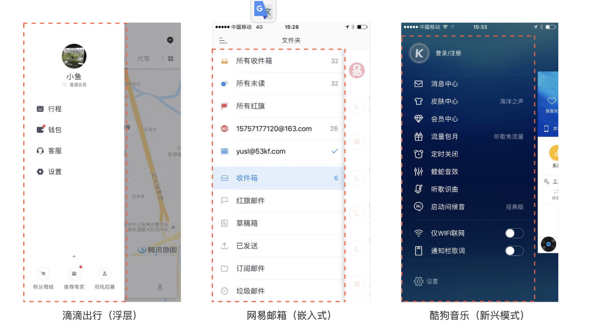<br></div>

<h2 id="下拉菜单式"><a href="#下拉菜单式" class="headerlink" title="下拉菜单式"></a>下拉菜单式</h2><p>&nbsp;&nbsp;&nbsp;&nbsp;&nbsp;&nbsp;下拉菜单式简称下拉式，也是一种瞬时的导航方式，即只有在我们需要的时候才会显示出来。能让用户在有限的屏幕空间上做更多的动作，可以用来筛选同一信息列表下不同类别的信息，或者快速启动某些常用的功能模块，而不需要频繁的页面跳转，即可实现操作目的。下拉菜单也可以是浮层或嵌入式的形式.这种导航形式是来源于 Material Design 里面的 Menu.Menu 是临时的一张纸（paper），由按钮（button）、动作（action）、点（pointer）或者包含至少两个菜单项的其他控件触发。</p>
<div align="center"><br>  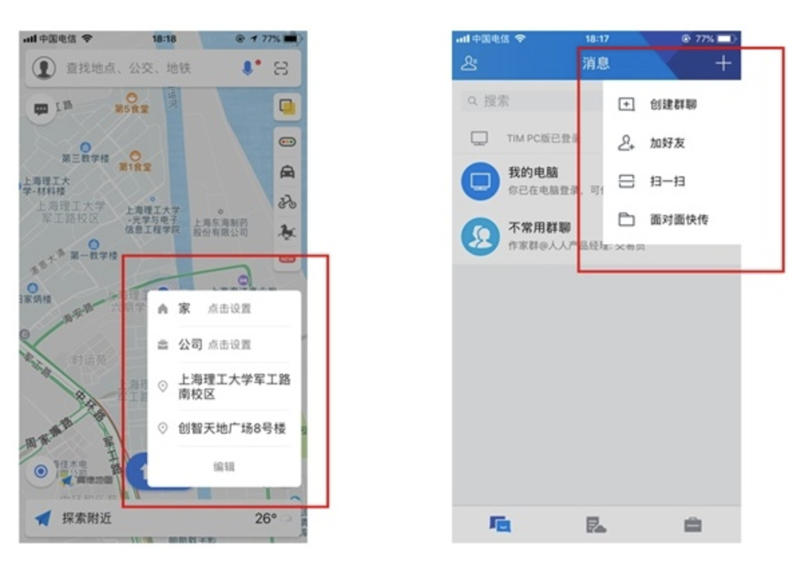<br></div>

<p>当信息层级变多的时候，菜单导航里要展示一层或者两层信息，比如大众点评采取的形式：</p>
<div align="center"><br>  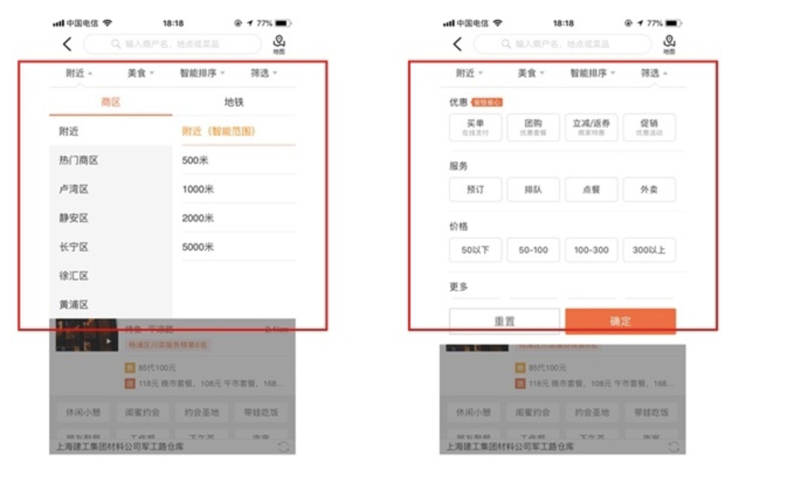<br></div>

<p><strong>优点：</strong></p>
<ul>
<li>节省页面展示空间。</li>
<li>点击 icon 即可唤醒，操作方便</li>
<li>点击空白处即可隐藏</li>
<li>唤醒的菜单位于 icon 附近，易感知</li>
</ul>
<p><strong>缺点：</strong></p>
<ul>
<li>绝大部分菜单导航位于页面顶部，手势操作不方便</li>
<li>入口不明显，容易忽视</li>
</ul>
<p><strong>适用场景</strong></p>
<ul>
<li>菜单导航不能作为主导航，一般为辅助导航</li>
<li>当一个页面承载的功能太多，可以将一些功能收纳到某一元素里的时候</li>
</ul>
<h2 id="悬浮-icon-导航"><a href="#悬浮-icon-导航" class="headerlink" title="悬浮 icon 导航"></a>悬浮 icon 导航</h2><p>&nbsp;&nbsp;&nbsp;&nbsp;&nbsp;&nbsp;悬浮 icon 导航，是将导航页面分层，无论你到达 APP 的哪个页面，悬浮 icon 永远悬浮在上面，你依靠悬浮层随时可以去想要去的地方，同时，为了让悬浮 icon 不遮挡某个页面的操作，通常悬浮的 icon 都可以在屏幕边缘自由移动。在 Android 的 Material Design 中，同样提出了悬浮 icon 的设计概念</p>
<div align="center"><br>  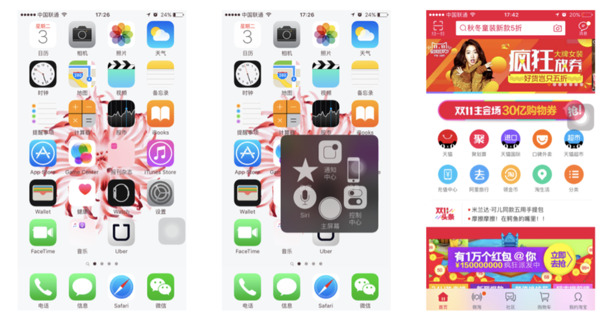<br></div>

<p><strong>优点：</strong></p>
<ul>
<li>悬浮式 icon 是一个非常便捷的操作入口，也适应大屏幕时代</li>
</ul>
<p><strong>注意：</strong></p>
<ul>
<li>悬浮式 icon 会遮挡某些页面的操作，在设计的时候应该考虑进去，比如无论在那个页面永远为悬浮 icon 留有位置。</li>
<li>在某些信息层级繁多且复杂的 APP，让用户自主决定是否需要调出悬浮式 icon，或者让用户自定义菜单会更加符合用户的心理预期</li>
</ul>
<p><strong>适用场景</strong></p>
<ul>
<li>更适应大屏的导航模式</li>
</ul>
<p>感谢以下大牛的分享：</p>
<ul>
<li><a href="https://www.uisdc.com/7-mobile-navigation-design-pattern" target="_blank" rel="noopener">深入浅出！全方位科普移动端导航的七种设计模式</a></li>
<li><a href="http://www.woshipm.com/ucd/669794.html" target="_blank" rel="noopener">【交互基础】系列之解析移动端导航设计模式</a></li>
<li><a href="https://www.uisdc.com/mobile-navigation-design-mode" target="_blank" rel="noopener">交互基础小课堂！移动端的导航设计模式</a></li>
<li><a href="https://juejin.im/entry/585168a4128fe1006b51d776" target="_blank" rel="noopener">移动导航设计</a></li>
</ul>

      
    </div>
    <footer class="article-footer">
      
        <div id="donation_div"></div>

<script src="/js/vdonate.js"></script>
<script>
var a = new Donate({
  title: '如果觉得我的文章对您有用，请随意打赏。您的支持将鼓励我继续创作!', // 可选参数，打赏标题
  btnText: '打赏支持', // 可选参数，打赏按钮文字
  el: document.getElementById('donation_div'),
  wechatImage: '../images/wx.jpeg',
  alipayImage: '../images/zfb.jpg'
});
</script>
      
      
      <div>
        <ul class="post-copyright">
          <li class="post-copyright-author">
          <strong>本文作者:  </strong>guowj
          </li>
          <li class="post-copyright-link">
          <strong>本文链接:  </strong>
          <a href="/移动端主导航的设计模式/" target="_blank" title="移动端主导航的设计模式">https://gwjacqueline.github.io/移动端主导航的设计模式/</a>
          </li>
          <li class="post-copyright-license">
            <strong>版权声明:   </strong>
            本博客所有文章除特别声明外，均采用 <a rel="license" href="https://creativecommons.org/licenses/by-nc-nd/4.0/" target="_blank" title="Attribution-NonCommercial-NoDerivatives 4.0 International (CC BY-NC-ND 4.0)">CC BY-NC-ND 4.0</a>
            许可协议。转载请注明出处
          </li>
         
        </ul>
<div>
</div></div>
      
      
        
	<div id="comment">
		<!-- 来必力City版安装代码 -->
		<div id="lv-container" data-id="city" data-uid="MTAyMC80MzU1OS8yMDA5OA==" ">
		<script type="text/javascript">
		   (function(d, s) {
		       var j, e = d.getElementsByTagName(s)[0];

		       if (typeof LivereTower === 'function') { return; }

		       j = d.createElement(s);
		       j.src = 'https://cdn-city.livere.com/js/embed.dist.js';
		       j.async = true;

		       e.parentNode.insertBefore(j, e);
		   })(document, 'script');
		</script>
		<noscript>为正常使用来必力评论功能请激活JavaScript</noscript>
		</div>
		<!-- City版安装代码已完成 -->
	</div>


      
      
        
  <ul class="article-tag-list"><li class="article-tag-list-item"><a class="article-tag-list-link" href="/tags/主导航设计/">主导航设计</a></li><li class="article-tag-list-item"><a class="article-tag-list-link" href="/tags/交互设计/">交互设计</a></li><li class="article-tag-list-item"><a class="article-tag-list-link" href="/tags/产品/">产品</a></li><li class="article-tag-list-item"><a class="article-tag-list-link" href="/tags/移动端/">移动端</a></li></ul>

      

    </footer>
  </div>
  
    
<nav id="article-nav">
  
    <a href="/移动端内容界面结构的导航设计模式/" id="article-nav-newer" class="article-nav-link-wrap">
      <strong class="article-nav-caption">上一篇</strong>
      <div class="article-nav-title">
        
          移动端内容界面结构的导航设计模式
        
      </div>
    </a>
  
  
    <a href="/常用的移动信息架构设计模式/" id="article-nav-older" class="article-nav-link-wrap">
      <strong class="article-nav-caption">下一篇</strong>
      <div class="article-nav-title">常用的移动信息架构设计模式</div>
    </a>
  
</nav>

  
</article>

<!-- Table of Contents -->

  <aside id="toc-sidebar">
    <div id="toc" class="toc-article">
    <strong class="toc-title">文章目录</strong>
    
        <ol class="nav"><li class="nav-item nav-level-2"><a class="nav-link" href="#标签式导航-tab-式导航"><span class="nav-number">1.</span> <span class="nav-text">标签式导航(tab 式导航)</span></a><ol class="nav-child"><li class="nav-item nav-level-3"><a class="nav-link" href="#底部-tab-式导航"><span class="nav-number">1.1.</span> <span class="nav-text">底部 tab 式导航</span></a></li><li class="nav-item nav-level-3"><a class="nav-link" href="#底部-tab-的扩展导航-舵式导航"><span class="nav-number">1.2.</span> <span class="nav-text">底部 tab 的扩展导航(舵式导航)</span></a></li><li class="nav-item nav-level-3"><a class="nav-link" href="#顶部-tab-式导航"><span class="nav-number">1.3.</span> <span class="nav-text">顶部 tab 式导航</span></a><ol class="nav-child"><li class="nav-item nav-level-4"><a class="nav-link" href="#分段选项卡"><span class="nav-number">1.3.1.</span> <span class="nav-text">分段选项卡</span></a></li><li class="nav-item nav-level-4"><a class="nav-link" href="#固定选项卡"><span class="nav-number">1.3.2.</span> <span class="nav-text">固定选项卡</span></a></li><li class="nav-item nav-level-4"><a class="nav-link" href="#滚动选项卡"><span class="nav-number">1.3.3.</span> <span class="nav-text">滚动选项卡</span></a></li></ol></li><li class="nav-item nav-level-3"><a class="nav-link" href="#底部、顶部组合-tab-导航"><span class="nav-number">1.4.</span> <span class="nav-text">底部、顶部组合 tab 导航</span></a></li></ol></li><li class="nav-item nav-level-2"><a class="nav-link" href="#抽屉式导航"><span class="nav-number">2.</span> <span class="nav-text">抽屉式导航</span></a></li><li class="nav-item nav-level-2"><a class="nav-link" href="#抽屉式导航的三种风格"><span class="nav-number">3.</span> <span class="nav-text">抽屉式导航的三种风格</span></a></li><li class="nav-item nav-level-2"><a class="nav-link" href="#下拉菜单式"><span class="nav-number">4.</span> <span class="nav-text">下拉菜单式</span></a></li><li class="nav-item nav-level-2"><a class="nav-link" href="#悬浮-icon-导航"><span class="nav-number">5.</span> <span class="nav-text">悬浮 icon 导航</span></a></li></ol>
    
    </div>
  </aside>

</section>
        
      </div>
      
      <footer id="footer">
  

  <div class="container">
      	<div class="row">
	      <!--<p> Powered by <a href="http://hexo.io/" target="_blank">Hexo</a> and <a href="https://github.com/iTimeTraveler/hexo-theme-hiker" target="_blank">Hexo-theme-hiker</a> </p>-->
	      <p id="copyRightEn">Copyright &copy;2019 guowj All Rights Reserved.</p>
	      
	      
    		<p class="busuanzi_uv">
				访客数 : <span id="busuanzi_value_site_uv"></span> |  
				访问量 : <span id="busuanzi_value_site_pv"></span>
		    </p>
  		   
		</div>

		
  </div>
</footer>


<!-- min height -->

<script>
    var wrapdiv = document.getElementById("wrap");
    var contentdiv = document.getElementById("content");
    var allheader = document.getElementById("allheader");

    wrapdiv.style.minHeight = document.body.offsetHeight + "px";
    if (allheader != null) {
      contentdiv.style.minHeight = document.body.offsetHeight - allheader.offsetHeight - document.getElementById("footer").offsetHeight + "px";
    } else {
      contentdiv.style.minHeight = document.body.offsetHeight - document.getElementById("footer").offsetHeight + "px";
    }
</script>
    </div>
    <!-- <nav id="mobile-nav">
  
    <a href="/" class="mobile-nav-link">Home</a>
  
    <a href="/archives" class="mobile-nav-link">Archives</a>
  
    <a href="/categories" class="mobile-nav-link">Categories</a>
  
    <a href="/tags" class="mobile-nav-link">Tags</a>
  
</nav> -->
    

<!-- mathjax config similar to math.stackexchange -->

<script type="text/x-mathjax-config">
  MathJax.Hub.Config({
    tex2jax: {
      inlineMath: [ ['$','$'], ["\\(","\\)"] ],
      processEscapes: true
    }
  });
</script>

<script type="text/x-mathjax-config">
    MathJax.Hub.Config({
      tex2jax: {
        skipTags: ['script', 'noscript', 'style', 'textarea', 'pre', 'code']
      }
    });
</script>

<script type="text/x-mathjax-config">
    MathJax.Hub.Queue(function() {
        var all = MathJax.Hub.getAllJax(), i;
        for(i=0; i < all.length; i += 1) {
            all[i].SourceElement().parentNode.className += ' has-jax';
        }
    });
</script>

<script type="text/javascript" src="https://cdnjs.cloudflare.com/ajax/libs/mathjax/2.7.1/MathJax.js?config=TeX-AMS-MML_HTMLorMML">
</script>


  <link rel="stylesheet" href="/fancybox/jquery.fancybox.css">
  <script src="/fancybox/jquery.fancybox.pack.js"></script>


<script src="/js/scripts.js"></script>


  <script src="/js/dialog.js"></script>


	<div style="display: none;">
    <script src="https://s95.cnzz.com/z_stat.php?id=1260716016&web_id=1260716016" language="JavaScript"></script>
  </div>


	<script async src="//busuanzi.ibruce.info/busuanzi/2.3/busuanzi.pure.mini.js">
	</script>


  </div>

  <div class="modal fade" id="myModal" tabindex="-1" role="dialog" aria-labelledby="myModalLabel" aria-hidden="true" style="display: none;">
  <div class="modal-dialog">
    <div class="modal-content">
      <div class="modal-header">
        <h2 class="modal-title" id="myModalLabel">设置</h2>
      </div>
      <hr style="margin-top:0px; margin-bottom:0px; width:80%; border-top: 3px solid #000;">
      <hr style="margin-top:2px; margin-bottom:0px; width:80%; border-top: 1px solid #000;">


      <div class="modal-body">
          <div style="margin:6px;">
            <a data-toggle="collapse" data-parent="#accordion" href="#collapseOne" onclick="javascript:setFontSize();" aria-expanded="true" aria-controls="collapseOne">
              正文字号大小
            </a>
          </div>
          <div id="collapseOne" class="panel-collapse collapse" role="tabpanel" aria-labelledby="headingOne">
          <div class="panel-body">
            您已调整页面字体大小
          </div>
        </div>
      


          <div style="margin:6px;">
            <a data-toggle="collapse" data-parent="#accordion" href="#collapseTwo" onclick="javascript:setBackground();" aria-expanded="true" aria-controls="collapseTwo">
              夜间护眼模式
            </a>
        </div>
          <div id="collapseTwo" class="panel-collapse collapse" role="tabpanel" aria-labelledby="headingTwo">
          <div class="panel-body">
            夜间模式已经开启，再次单击按钮即可关闭 
          </div>
        </div>

        <div>
            <a data-toggle="collapse" data-parent="#accordion" href="#collapseThree" aria-expanded="true" aria-controls="collapseThree">&nbsp;&nbsp;&nbsp;&nbsp;&nbsp;&nbsp;关 于&nbsp;&nbsp;&nbsp;&nbsp;&nbsp;&nbsp;</a>
        </div>
         <div id="collapseThree" class="panel-collapse collapse" role="tabpanel" aria-labelledby="headingThree">
          <div class="panel-body">
            guowj
          </div>
          <div class="panel-body">
            Copyright © 2019 guowj All Rights Reserved.
          </div>
        </div>
      </div>


      <hr style="margin-top:0px; margin-bottom:0px; width:80%; border-top: 1px solid #000;">
      <hr style="margin-top:2px; margin-bottom:0px; width:80%; border-top: 3px solid #000;">
      <div class="modal-footer">
        <button type="button" class="close" data-dismiss="modal" aria-label="Close"><span aria-hidden="true">×</span></button>
      </div>
    </div>
  </div>
</div>
  
  <a id="rocket" href="#top" class=""></a>
  <script type="text/javascript" src="/js/totop.js?v=1.0.0" async=""></script>
  
    <a id="menu-switch"><i class="fa fa-bars fa-lg"></i></a>
  
</body>
</html>